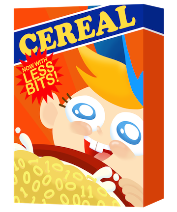

cereal - A C++11 library for serialization

cereal is a header-only C++11 serialization library. cereal takes arbitrary data types and reversibly turns them into different representations, such as compact binary encodings, XML, or JSON. cereal was designed to be fast, light-weight, and easy to extend - it has no external dependencies and can be easily bundled with other code or used standalone.
cereal comes with full support for C++11
Serialization support for pretty much every type in the standard library comes out of the box with cereal. cereal also fully supports inheritance and polymorphism. Since cereal was
written to be a minimal, fast library, it does not perform the same
level of object tracking as other serialization libraries such as Boost.
As a consequence of this raw pointers and references are not
supported, however smart pointers (things like std::shared_ptr and std::unique_ptr) are no problem.
cereal works on a wide range of C++11 compliant compilers
cereal uses features new to C++11 and requires a fairly compliant C++ compiler to work properly. cereal officially supports g++ 4.7.3, clang++ 3.3, and MSVC 2013 (or newer). It may work on older versions or other compilers such as ICC, but there is no emphasis on supporting them. cereal works under both libstdc++ and libc++ when compiling with g++ or clang++.
cereal is fast and compact
In simple performance tests, cereal is usually faster than Boost’s serialization library (as well as many others) and produces binary representations that take up less space, especially for smaller objects. cereal uses some of the fastest XML and JSON parsers and generators available in C++. The source code for cereal is considerably easier to understand and extend than that of Boost.
cereal is extensible
cereal comes with excellent standard library support as well as binary, XML, and JSON serializers. If you need something else, cereal was written to be easily extensible for adding custom serialization archives or types.
cereal is unit tested
Trust something other than good faith - we’ve written a basic set of unit tests (and even tested coverage!) to make sure cereal is doing what it should be doing. These unit tests require the Boost unit test framework to compile.
cereal is easy to use
Adding support for cereal is as simple as including a header file and writing a serialization function. cereal’s functionality is well documented both conceptually and at the code level. cereal will do its best to give descriptive static assertions at compile time if you make any mistakes along the way.
cereal offers a familiar syntax to users of Boost
cereal’s syntax will look familiar if you’ve used Boost’s serialization library and is designed to make the transition easy. cereal looks for serialization functions either defined in the type to be serialized or for non-member functions to do the same thing. Unlike Boost, cereal doesn’t need to be told (in most cases) what type of functions to look for, and will warn you at compile time if you make a mistake. If you are coming from Boost, be sure to check out our transition guide.
#include <cereal/types/unordered_map.hpp>
#include <cereal/types/memory.hpp>
#include <cereal/archives/binary.hpp>
#include <fstream>
struct MyRecord
{
uint8_t x, y;
float z;
template <class Archive>
void serialize( Archive & ar )
{
ar( x, y, z );
}
};
struct SomeData
{
int32_t id;
std::shared_ptr<std::unordered_map<uint32_t, MyRecord>> data;
template <class Archive>
void save( Archive & ar ) const
{
ar( data );
}
template <class Archive>
void load( Archive & ar )
{
static int32_t idGen = 0;
id = idGen++;
ar( data );
}
};
int main()
{
std::ofstream os("out.cereal", std::ios::binary);
cereal::BinaryOutputArchive archive( os );
SomeData myData;
archive( myData );
return 0;
}
cereal has a permissive license
cereal is licensed under the BSD license.
If you were looking for the Haskell library named cereal, you probably meant to go here.